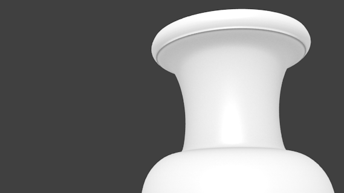
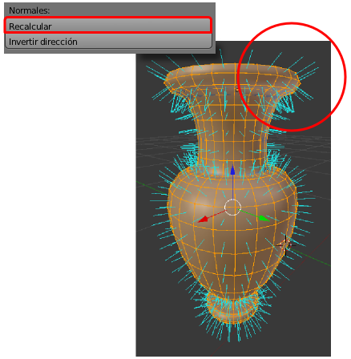

Recalculado de normales
Ya le hemos aplicado a nuestro objeto un modificador de Subdivisión por lo que nos falta aplicarle un sombreado Suave (desde Modo Objeto  ). Al hacerlo es muy probable que nos aparezcan unas sombras extrañas
). Al hacerlo es muy probable que nos aparezcan unas sombras extrañas
Esto aparece aún con más evidencia en un render.
Las caras para el objeto has sido generadas por un proceso que no garantiza la correcta orientación de las normales. ¿Qué significa esto?
Cuando sacamos un cubo a escena, Blender interpreta automáticamente que las caras que dan al exterior son las que considerará para sombreado, texturas... mientras que las que están orientadas hacia el interior no serán tenidas en cuenta en muchas operaciones; esto supone un considerable ahorro de recursos. Aparece así el concepto normal de una cara.
Para saber hacia dónde está apuntando la normal vamos al cuadro de Propiedades ("N") (en Modo Edición  ) y activamos Cara en el apartado Normales en la botonera Visualización de malla.
) y activamos Cara en el apartado Normales en la botonera Visualización de malla.
En nuestro ejemplo vemos cómo aquellos tres vértices iniciales originaron caras con las normales apuntando al interior de la ánfora, mientras que todas las demás apuntan hacia afuera. Es absolutamente necesario solventar ese problema para que todas miren hacia afuera:
- Seleccionamos todos los vértices "A".
- En el cuadro de Herramientas ("T") pulsamos Recalcular en el apartado Normales (también vale Malla/Normales/Recalcular hacia afuera).

Una vez solucionado el problema lo mejor es desactivar la visibilidad de las Normales.